![]()
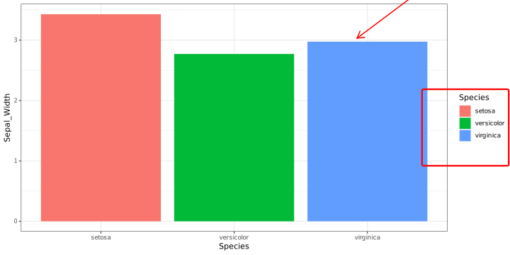
可視化事始め
そのフィギュア、必要ですか？
2026-11-01
Take Home Message
- まず、最初に何を見せたいのかを3つから考える
- 分布
- 関係
- 差・比率
- 差・比率を見せる時は極力長さで表す
- 面積は使わない
- 最もシンプルな図を実現する
- データ・インク比率が良いもの
- Nや分布にも配慮する
- 連続値に棒グラフは避ける
- 棒グラフは極力積み上げでなくDodgedする
- 3次元プロットは避ける！(特に円グラフ)
- 色覚多様性にも配慮した色を使う
What is This？
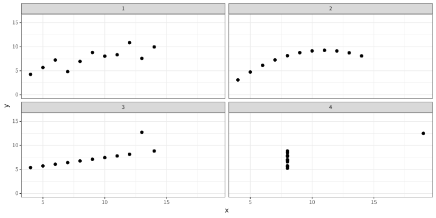
What is this?
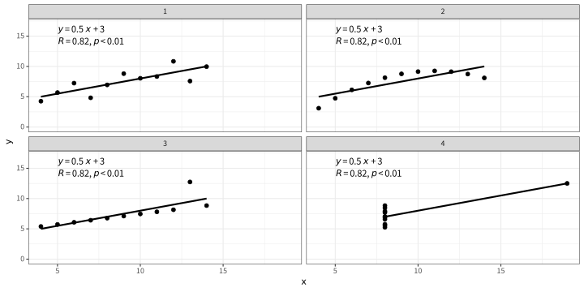
- Anscombe’s Quartet
- 上記、相関係数と回帰直線に加えて・・・・・・
- Xの平均 9, 分散 11
- yの平均 7.50, 分散 4.1
- でも全く違う形
Visualization
- Tableと異なり、Figureにすることで情報量は格段に上がる
- 一方で、適切なFigureを描かないと見にくいばかりか、misleadingにもなりうる
- 内科の問診のように、基礎中の基礎だけど重要極まりない工程
- Visualizationって誰かに習ったっけ？
Visualization：良いFigureの条件
よいFigureの条件
Edward Tufte
すばらしいグラフは興味深いデータを, よく工夫して表現したものです. これはデータの中身の問題であり, 統計の問題であり, そして デザインの問題です. (キーラン・ヒーリー 2021)
非常に良いFigureの見本
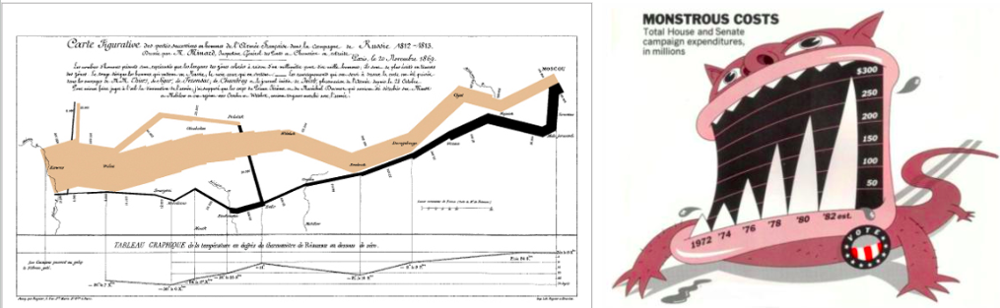
- 左の図は同時に6種類の変数をきれいに示している
- 右の図はCostの高さをモンスターの牙に例えている
- ？？？
よいFigureの条件
よいグラフは読み手に対して最小のスペース、最小のインクによって最小の時間で最大限のアイディアを与えてくれます.……ほとんどの場合,グラフは複数の変量からなり。……そしてすばらしいグラフは私たちにデータの真 実を教えてくれます。
- 最小のスペース、最小のインクで最大限のアイディアを与える？
データ・インク比
インク・データ比の法則
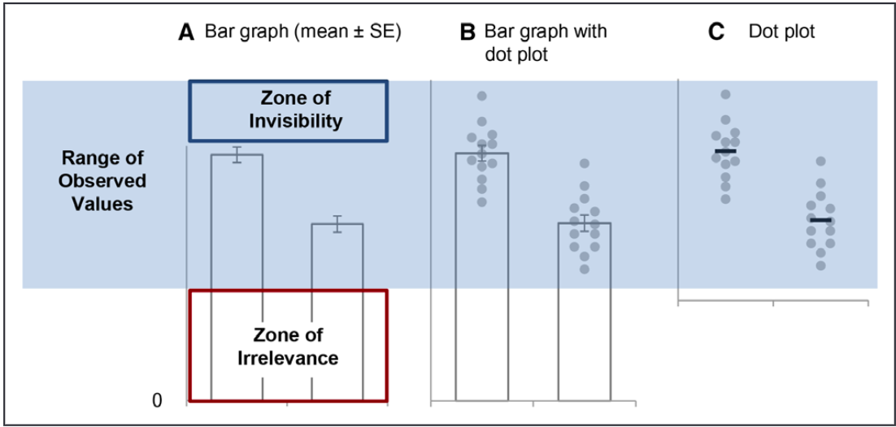
(Weissgerber et al. 2019)- そのプロットの中で意味がある部分と、使ったインクの割合を小さくすることが良いプロットの条件
- 棒グラフに下の部分や、X軸でわざわざ分かれているグラフの色の塗り替えは不要
- 簡単にいうと”Simple is best”
見せたいものって？
- 見せたいものは大体この3種類に大別
- 関係性
- 分布
- 比率・差
- この6種類が基本
- 散布図
- ヒストグラム
- 折れ線グラフ
- 箱ひげ図
- ドットチャート
- 棒グラフ
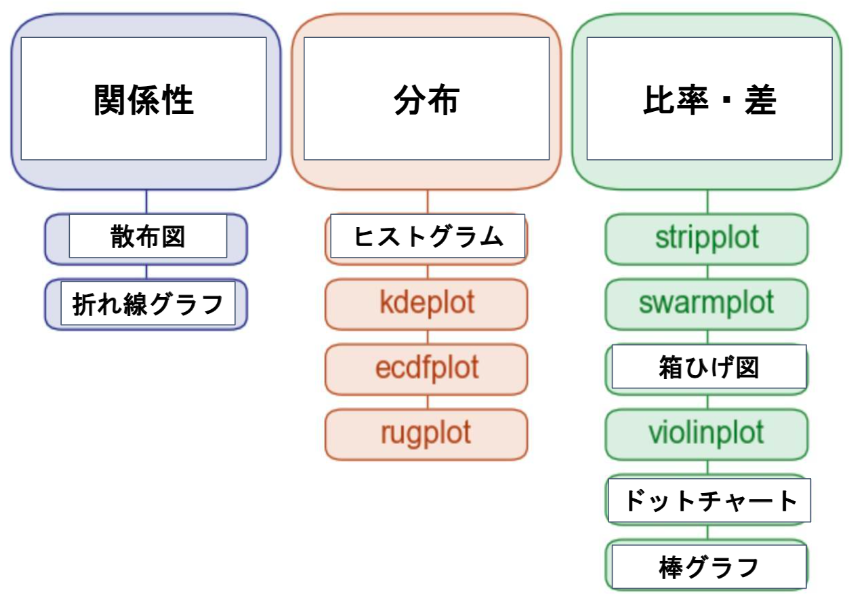
人間の得意・苦手分野
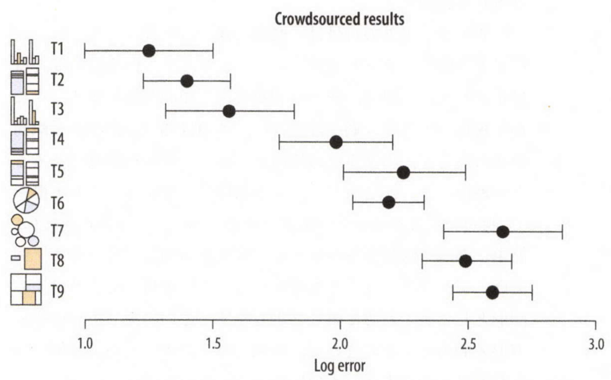
(キーラン・ヒーリー 2021)- 右の方がエラーが多い
- 面積を使うMosaic図や円グラフはエラーが多い
Example
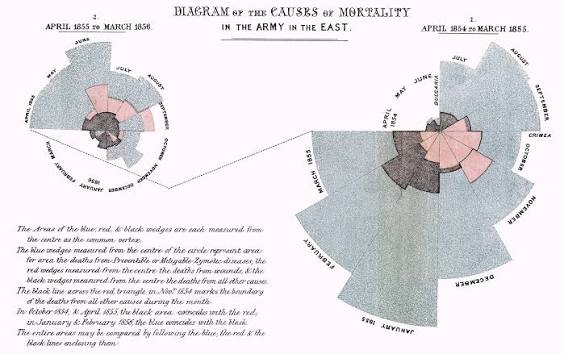
- 青が負傷による死亡
- 赤が感染症による死亡
- 黒がその他
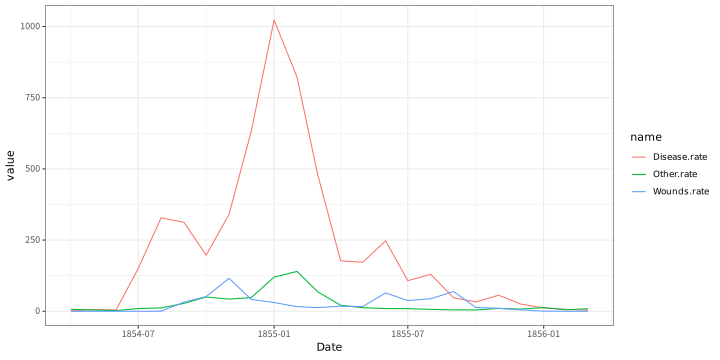
- どちらがより、感染症による死亡の影響の強さを示せていますか？
Nへの意識
Nによるプロットの選択
- 連続値の平均や中央値を比較する時には分布も非常に重要
- 分布を見る時にはバイオリンプロットもよい
- サンプルサイズの大きさで、使う図表を分けるべき
- 一つの目安として
n < 30ではドットチャートを併用する
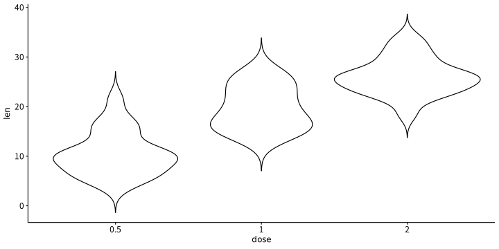
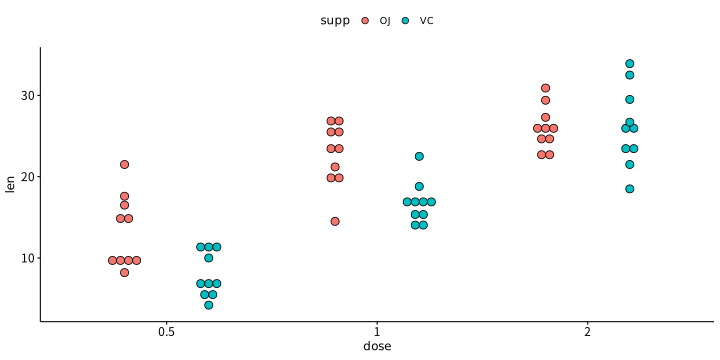
What’s This？
- STEMI患者のPCI後のCKの値の平均
- STEMI患者のPCI後のCKの値の中央値
- ???
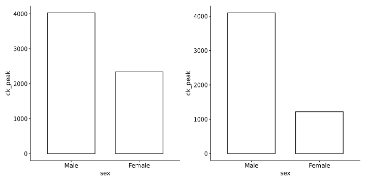
What’s This？
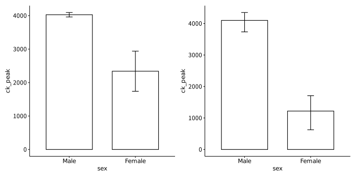
That’s it!!
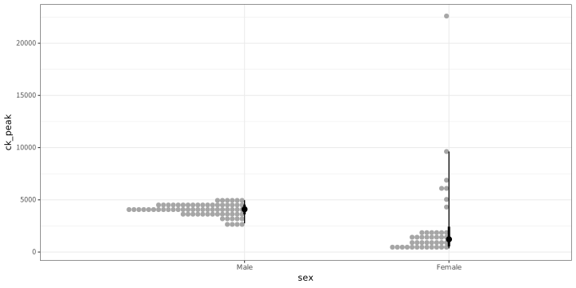
- Femaleだけ外れ値があるが故の問題
- 棒グラフだと不適切に要約されてしまい気づけない
Nへの意識
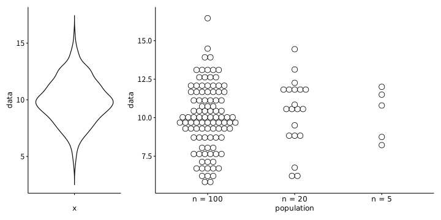
- 何かの比較の時には必ず分布も考慮する
- 箱ひげ図やバイオリンプロットは非常に見やすい
- 一方で、Nが小さいときにはその意味も変わる
- Nが少ないときはそのデータも入れた方が良い
Nへの意識と見やすさの両立
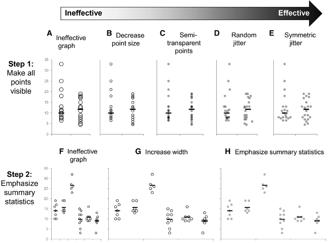
{fig-alt=“ドットチャートと要約1”“}- ドットチャートに要約（平均・中央値）を追加する
- ドットを出来るだけ薄くする(Weissgerber et al. 2019)
連続値の出し方まとめ
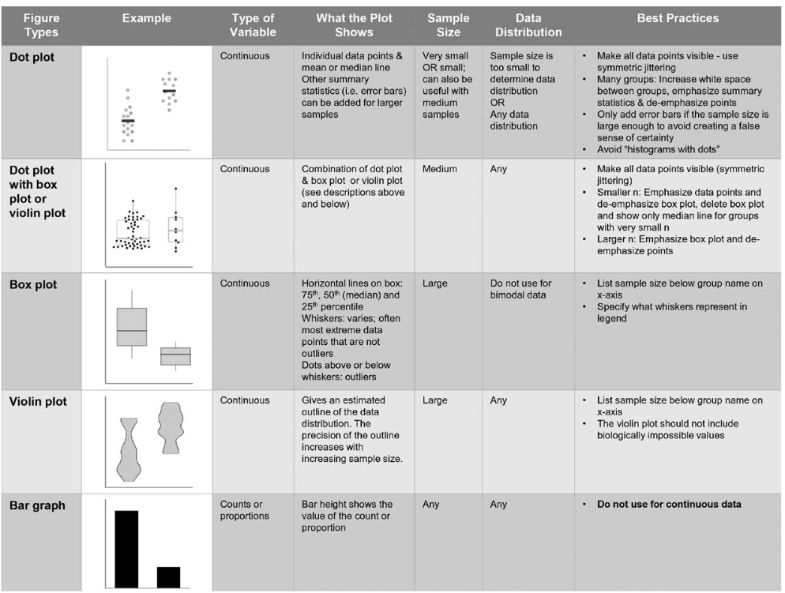
よくある不適切なVisualization
3次元プロットって？
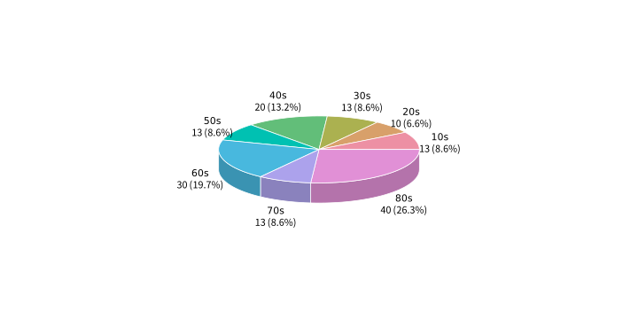
- 基本的にはmisleading
- 使わなくて済むなら絶対に使わない
- 一番ダメなのが3次元円グラフ
- 4つの”13”は同じ大きさに見えますか？
- 13に挟まれた数値はどれが一番大きく見えますか？
どちらが見やすい？
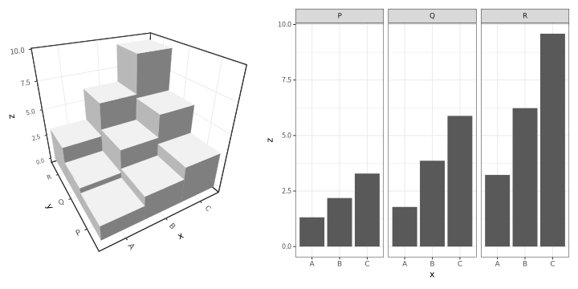
Stacked-barとAligned barについて
- 縦に重ねた棒グラフと横に重ねた棒グラフ
- どちらが良いですか？
棒グラフが見せたいもの
- 棒グラフは横に並べて長さで差や比率を示すもの
- 途中でBreakしている棒グラフは決して使ってはいけない
- そういう意味で、積み重ねの棒グラフは一番下がそろっていないので×
- 事実、長さを間違える人が多い事が知られている(Talbot et al. 2014)
Stacked bar and algined bar graph
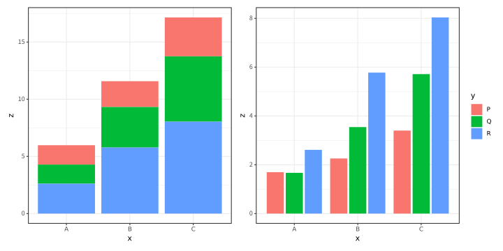
- どっちが見やすい？
- 例えば、AのQの値とBのPの値は？
Visualizationのテクニック
ゲシュタルトとは
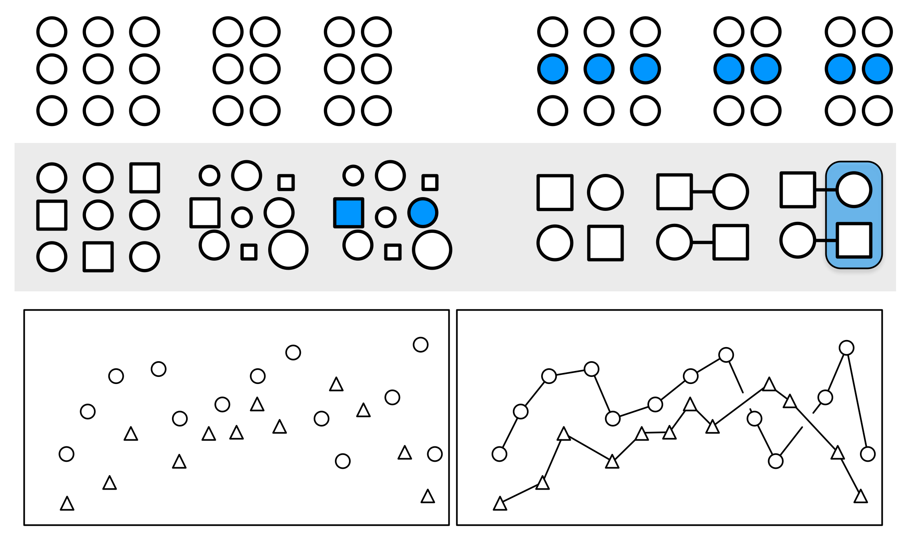
- 少ない視覚的情報から要素間の関係性を推論すること
- 主に以下の法則が存在する
- 近接性(Proximity):空間的に近いものは互いに関連しているように見える
- 類似性(Similarity):見た目が似ているものは関係しているように見える
- 接続性(Coneetction):視覚的に結び付けられているもの同士は関係を持っているように見える
- 連続性(Continuity):一部が隠されているオブジェクトは親和性のある形に補完される
- 閉鎖性(Closure):不完全な形は完全なものとして知覚される
- 共通の運命(Common fate):同じ方向に移動するオブジェクトは1つの群として認識される
- ただし、別データを線で結んではいけない
推奨はしないけど
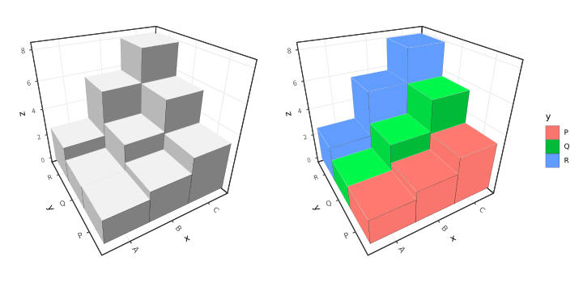
- 右の方が、まだ視線を誘導できる
色使いについて
- いわゆる色覚異常は一般人口で約3%おり非常にCommon(Jeong et al. 2025)
- 男性により多い
- 読者・査読者にもいるかも知れないので色使いは皆に優しい方が良い
カラーユニバーサルデザイン
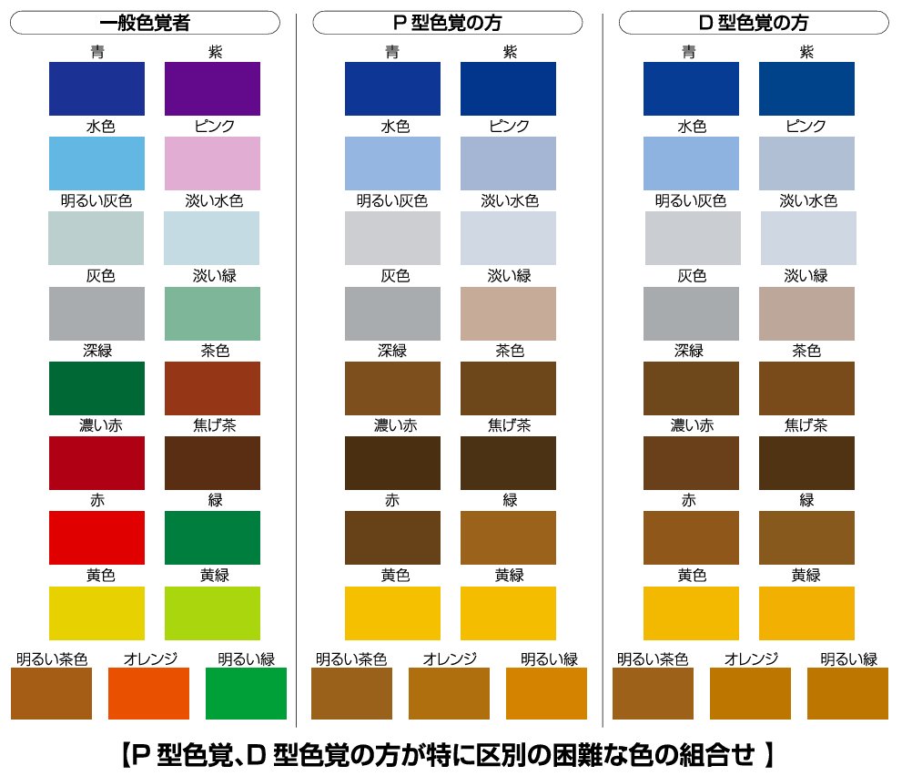
- この組み合わせは避ける
- 以下のルールは有用
- 赤を使うときは赤橙やオレンジを使う
- 黄色、黄緑、明るい緑は同時に使わない
- 赤緑(暖色系)と緑青(寒色系)のそれぞれの側から交互に選ぶ
- 具体的な色彩の選び方は以下を参照(東京都福祉保健局生活福祉部地域福祉推進課 2011)
Rで使えるカラーパレット
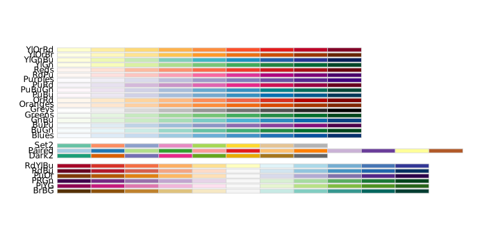
おすすめ
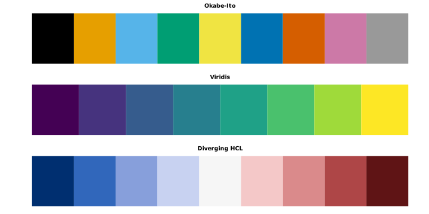
- カテゴリー変数はOkabe-Ito
- 連続値はViridisがおすすめ！
- 正負を強調する時はDiverginc HCLが良い
各JournalのVisualizationの推奨
| Journal | 明示的に避けるもの |
|---|---|
| JAMA1 | Pie chart、3D graph、stacked bar chartを避ける。Bar graphは原則として頻度（number、percentage、rate）のみに使用する。 |
| Annals of Internal Medicine2 | Pie chart、3D graphicを避ける。不確実性を示せない単なるBar plotは避ける |
| NEJM3 | 禁止事項の記載はないが、Common figure typeの中にPie chartはなし |
| The BMJ4 | Histogram等はsimple 2-dimensional formatとし、background gridを避ける |
| The Lancet5 | 3D graphは可能であれば1つ以上の2D graphへ変換する。 |
| JACC6 | Bar graphは個数や割合以外では避ける。特にcontinuous dataをbarのみで要約することを避ける。 nが少ないときはdot/scatter plotで全体の分布を示す 色覚異常者に優しい色を使う |
| European Heart Journal (EHJ)7 | 特に記載なし 色覚異常者に優しい色を使う |
| Circulation / AHA Journals8 | Bar graphはcounts/proportions以外では避ける。Continuous dataをbarだけで要約しない。 Continuous data、nが小さい時はdot plot / scatter plotで全体の分布を表示する。 色覚異常者に優しい色を使う |
Take Home Message
- まず、最初に何を見せたいのかを3つから考える
- 分布
- 関係
- 差・比率
- 差・比率を見せる時は極力長さで表す
- 面積は使わない
- 最もシンプルな図を実現する
- データ・インク比率が良いもの
- Nや分布にも配慮する
- 連続値に棒グラフは避ける
- 棒グラフは極力積み上げでなくDodgedする
- 3次元プロットは避ける！(特に円グラフ)
- 色覚多様性にも配慮した色を使う
R packages reference
Package Version Citation
1 base 4.5.3 @base
2 cowplot 1.2.0 @cowplot
3 ggcube 0.3.0 @ggcube
4 ggdist 3.3.3 @ggdist2024; @ggdist2025
5 ggpubr 1.0.0 @ggpubr
6 here 1.0.2 @here
7 marginaleffects 1.0.0 @marginaleffects
8 patchwork 1.3.2 @patchwork
9 plotrix 3.8.14 @plotrix
10 RColorBrewer 1.1.3 @RColorBrewer
11 Rdatasets 0.0.1 @Rdatasets
12 rmarkdown 2.32 @rmarkdown2018; @rmarkdown2020; @rmarkdown2026
13 tidyverse 2.0.0 @tidyverse
14 viridisLite 0.4.3 @viridisLiteReferences
Jeong, Yi Deun, Jaehyeong Cho, Yejun Son, et al. 2025. “Global Prevalence of Congenital Color Vision Deficiency Among Children and Adolescents, 1932-2022.” Ophthalmology 132 (12): 1431–44. https://doi.org/10.1016/j.ophtha.2025.07.031.
Talbot, Justin, Vidya Setlur, and Anushka Anand. 2014. “Four Experiments on the Perception of Bar Charts.” IEEE Transactions on Visualization and Computer Graphics 20 (12): 2152–60. https://doi.org/10.1109/TVCG.2014.2346320.
Waskom, Michael. n.d. Overview of seaborn Plotting Functions. Https://seaborn.pydata.org/tutorial/function_overview.html.
Weissgerber, Tracey L, Stacey J Winham, Ethan P Heinzen, et al. 2019. “Reveal, Don’t Conceal: Transforming Data Visualization to Improve Transparency: Transforming Data Visualization to Improve Transparency.” Circulation 140 (18): 1506–18. https://doi.org/10.1161/CIRCULATIONAHA.118.037777.
キーラン・ヒーリー. 2021. データ分析のためのデータ可視化入門. 実践Data Scienceシリーズ. 講談社.
東京都福祉保健局生活福祉部地域福祉推進課. 2011. 東京都カラーユニバーサルデザインガイドライン. 東京都福祉保健局生活福祉部地域福祉推進課. https://www.fukushi.metro.tokyo.lg.jp/documents/d/fukushi/colorudguideline2.
ご静聴ありがとうございました
Medicine · Statistics · Home